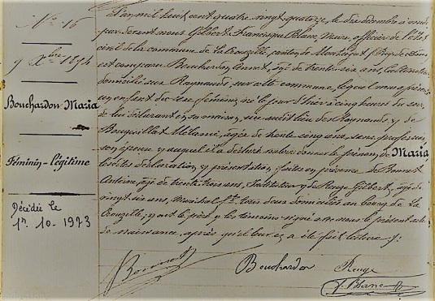

Acte de naissance de Marie

Acte de naissance de Maria
Marie et Maria
Marie est la plus âgée des sept enfants, elle est née le 30 Janvier 1886 au hameau des Raynauds, commune de la Crouzille. Elle a donc 28 ans au début du conflit, célibataire elle dévoue toute son énergie à la ferme
d’autant que les parents ont déjà passé la cinquantaine. Annet, le père est alors âgé de 55 ans.
De toute les filles, c’est elle qui écrit le moins et les quelques cartes qu’elle envoie à ses frères parlent principalement de l’intendance de la ferme et des travaux des champs.
C’est clair, elle a la tête sur les épaules et prend les choses en main avec le père. Après la mort du père, Auguste et Antoine étant mariés et ayant quitté les Raynauds, elle restera à exploiter la ferme avec ses deux
sœurs Maria et Augustine.
Dans la famille, elle gardera cette réputation d’une femme forte et dure au travail, jusqu’à sa mort au bel âge de 88 ans.
Maria est la cinquième des enfants, elle est née le 9 Décembre 1894. Elle approche tout juste les vingt ans quand la guerre commence et tout porte à penser que sa vie en sera fort impactée.
Elle écrit beaucoup aux frères mais avant tout c’est elle qui semble s’occuper le plus des deux petites, Augustine et Léa, dont elle est très proche.
Durant la guerre, Maria entretient également une correspondance avec un autre soldat, Désiré, originaire de Virlet (un autre village alentour). Cette correspondance semble plus personnelle et on peut y déceler un début
d’idyllle brutalement interrompue par la guerre. Malheureusement, Désiré ne reviendra pas du conflit.
Maria restera célibataire jusqu’à la fin de sa vie et vivra auprès de Marie et Augustine. Elle meurt à l’âge de 79 ans.